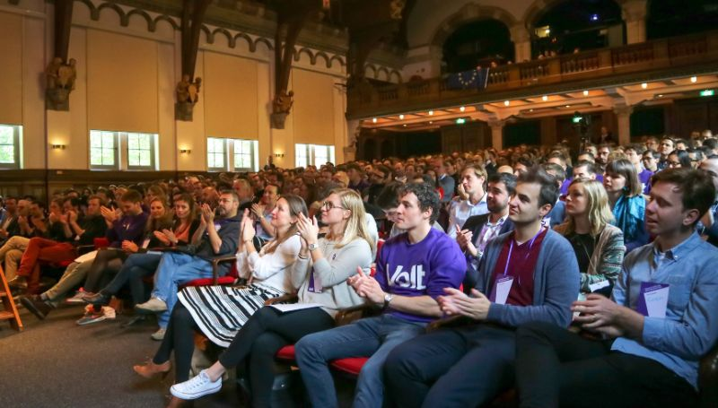
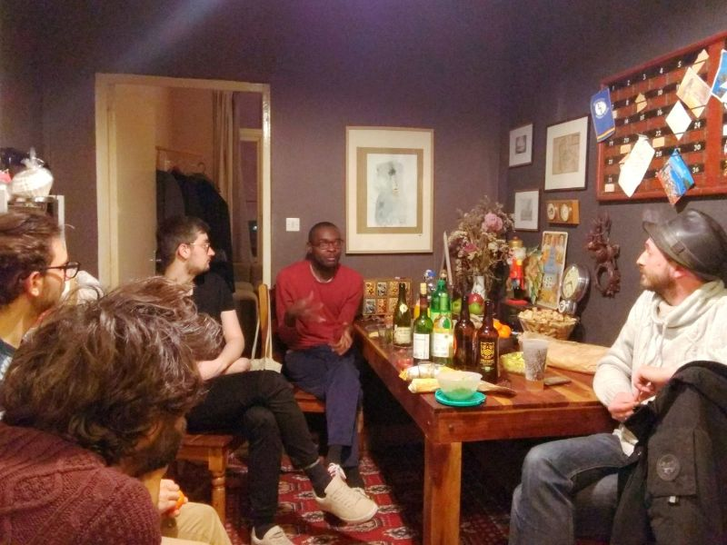
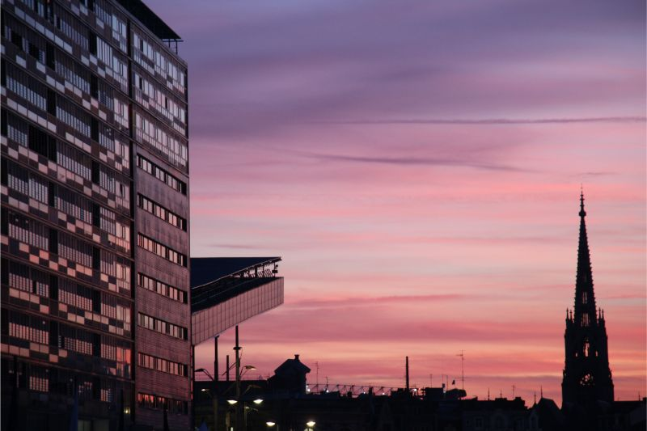

About Volt
What is Volt ?
Volt was created the day the Brexit result was announced and has since grown to be present in 30 European countries with political parties established in 13. We are a movement of citizens volunteering to work towards a more progressive, participative and paneuropean way of doing politics - focussing on redefining what ecologic principles, solidarity and democracy should mean in the 21st century.
Without much experience or financial means we participated in the European elections in eight countries and succeeded in getting one MEP elected in Germany, who members have since voted to join the Group of the Greens/European Free Alliance. Our eyes are now squarely set on upcoming local elections throughout Europe to continue growing our citizen movement which shares the same values and ideas across all countries.
What's different ?
The idea of Volt is to give citizens a voice, to facilitate the development of a political agenda focussed on citizens needs' and finding means of adressing these needs - being elected or not. We are mostly volunteers with little political experience, ambition or color. We care for topics and for doing politics in a different way.
We believe that a democracy should not only mean voting for representatives but to be actively engaged in local communities and associtions, to bring up topics that matter, to suggest improvements and be in close relation with political constituencies. And as an administration, we must strive to serve all citizens, to be efficient and responsive in meeting evolving needs, to be able listen and to implement an agenda that citizens can rally behind and that tries to propose answers to the challenges facing us today.
Why going local with a European idea ?
Volt was born on a day Europe failed to show to show why it matters on national level. But aren't we also failing to also acknowledge why Europe matters on local level ? We take peace and stability for granted. We give European names to buildings and regions - Euralille, Métropole Européenne de Lille, Eurometropolis, Euroflanders. But what else ? We don't report about European issues in the news because we believe it does not matter to us ? We fail to attract European institutions for lack of international education and transport infrastructure, which affects our children and their chances as well as our mobility just as much. We create ambitious cross border integration plans that seem to never get implemented. We worry about inner city traffic polluting the air when transit cargo from the north sea ports passes through our Lille and MEL area on the road. We claim to be a solidary city, yet have countless homeless people on the streets while we make sure migrants are deported out of their shelters and the MEL area altogether. We have large EU budgets available for improving rural and urban infrastructures, yet we rank last in Europe in asking for those budgets risking to loose them altogether. Those are European issues that require looking beyond the borders of our municipality to learn from good ideas implemented elsewhere, to point out shortcomings and to work together with all our cultural and national indentities to tackle challenges facing everyone of us.
We are all part of this puzzle. And we need to work together if we want to ensure our children have opportunities and a future that allows them to grow up. It is our responsiblity and obligation as citzens of Lille. As Nordists. As French. And also as Europeans.